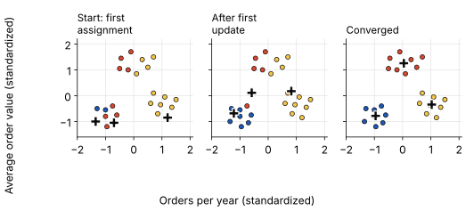
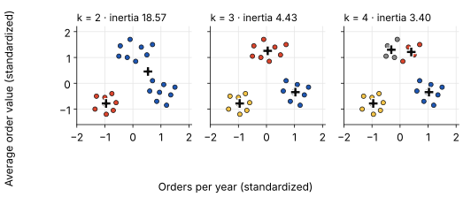
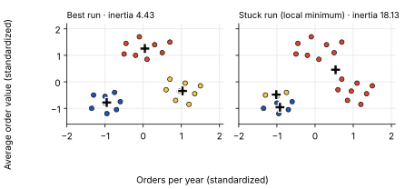
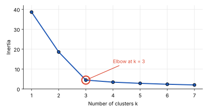

Unsupervised learning
K-Means Clustering
An online shop has thousands of customers and wants to understand how their shopping behaviour differs so it can tailor its marketing and offers to different customer groups. But there is one problem: nobody knows in advance which customer belongs to which group. There is no existing “customer segment” label to predict.
This is where K-means comes in. Instead of relying on predefined categories, it looks for patterns in the data and groups customers with similar behaviours into clusters. For example, it might identify frequent shoppers, occasional buyers and high-spending customers.
Since the algorithm discovers these groups on its own without using labelled data, K-means is an example of unsupervised learning. This is different from Logistic Regression, a supervised learning algorithm that learns from labelled examples to predict known outcomes.
In this article
How K-Means Works
Represent each customer using two features: orders per year and average order value. Each customer becomes a point on a chart. Customers with similar shopping behaviour tend to be closer together. K-means groups these points into clusters based on their distance from cluster centres.
- K: The number of clusters chosen in advance. Here, k = 3.
- Centroid: The centre of a cluster, calculated as the mean position of all points assigned to it.
- Cluster: A group of data points assigned to the same nearest centroid.
The algorithm repeats four steps:
- Step 1: Place starting centroids. Choose k customers at random as the first centroids.
- Step 2: Assign each customer to the nearest centroid. Measure the distance from the customer to every centroid and pick the smallest.
- Step 3: Move each centroid. Replace each centroid with the average of the customers assigned to it.
- Step 4: Repeat Steps 2 and 3 until no customer changes cluster.

How is “nearest” measured?
With the straight-line (Euclidean) distance. Take a customer with 12 orders and an average order value of €80, and a centroid at 10 orders and €70:
distance = √((12 − 10)² + (80 − 70)²) = √(4 + 100) = √104 ≈ 10.2 We calculate this for every centroid, and the customer joins the one with the smallest distance.
The orders contribute only 4 to the sum while the order value contributes 100, so the larger scale dominates. That is why features are usually standardized before running K-means.
Inertia: How Compact Are the Clusters?
How do we measure how well K-means groups the data? One way is inertia.
Inertia is the sum of squared distances between each observation and the centroid of its assigned cluster. In simple terms, it measures how tightly the data points are grouped around their centroids.
Example: Imagine three customers with distances of 0.3, 0.4 and 0.5 from their centroid:
Inertia = 0.3² + 0.4² + 0.5² = 0.50
We calculate this for every customer across all clusters and add the results together.
Lower inertia means more compact clusters, with observations closer to their respective centroids.
K-means aims to minimize this value by repeatedly assigning observations to the nearest centroid and updating the centroid positions.
What Happens When We Change K?
Let's apply K-means to the same 24 customers using different values of K.
| Number of clusters (K) | Inertia |
|---|---|
| 1 | 38.64 |
| 2 | 18.57 |
| 3 | 4.43 |
| 4 | 3.40 |

As K increases, inertia decreases because more centroids allow data points to be grouped closer to their respective centres.
But lower inertia doesn't automatically mean better clustering.
With K = 24, every customer could form their own cluster, resulting in an inertia of zero. Mathematically, that's perfect compactness, but it wouldn't be useful for customer segmentation.
The goal is not simply to minimize inertia, but to find a meaningful balance between cluster compactness and the number of clusters.
This is where the Elbow Method comes in.
Local Minima: Why Different Runs Give Different Clusters
K-means starts from random centroids, and where it starts can decide where it ends up. The algorithm only moves in the direction of lower inertia, so it can get stuck in a result that is not the best one. This is called a local minimum.
For example, if two starting centroids land in the same group of customers, the algorithm can end up splitting that group in two and merging two other groups into one. On our 24 customers we ran k-means 200 times with a single random start each. 178 runs found the best result (inertia 4.43), but 22 runs got stuck with inertia between 18 and 25, with clusters that make no business sense.

Two standard fixes:
- Several restarts. Run k-means many times with different starting centroids and keep the run with the lowest inertia.
- k-means++. Choose the starting centroids so that they are far apart from each other, which makes bad starts much less likely.
Both are built into common libraries, so in practice you use them by default. Every inertia value in this post is the best of several runs.
Evaluating a K-Means Model
In supervised learning we compare predictions with the true answer. Here there are no true segments to compare with, so we judge a clustering by its shape: are the clusters compact (customers close to their own centroid) and well separated (clusters far from each other)? Two tools answer this, and both help choose k.
Mode 1: Elbow Curve (Inertia)
Plot inertia against k. The curve falls steeply while extra clusters reveal real groups, then flattens once they only split groups that already exist. The bend, the “elbow”, is the k to choose.

For our customers, going from k = 1 to 2 lowers inertia by 20.07, going from 2 to 3 lowers it by another 14.14, but going from 3 to 4 lowers it by only 1.03. The drop flattens after k = 3, so the elbow is at 3. It uses inertia to tell us where additional clusters stop paying off.
The limit of this tool: with real data the bend is often gradual, and two people can disagree about where it is.
Mode 2: Silhouette Score
The silhouette score judges each customer on its own. For one customer it compares two distances:
- a is the average distance to the other customers in its own cluster.
- b is the average distance to the customers of the nearest other cluster.
s = b − amax(a, b) The silhouette value s of one customer, between −1 and +1.
It lies between −1 and +1:
- Close to +1: the customer is much closer to its own cluster than to any other, so it fits well.
- Around 0: the customer sits on the border between two clusters.
- Below 0: the customer is closer to another cluster than to its own, so it was probably put in the wrong cluster.
Move the slider to see this in action: it slides one customer from cluster A toward cluster B.
The silhouette score of a clustering is the average s over all customers. We calculate it for each k and choose the k with the highest score:
| k | Average silhouette score |
|---|---|
| 2 | 0.51 |
| 3 | 0.68 |
| 4 | 0.57 |
| 5 | 0.44 |
The score peaks at k = 3, so it agrees with the elbow curve. If the two disagree, look at the clusters themselves and ask which one gives segments that are useful for the business.
Putting It Together: Choosing the Number of Clusters
Now that we understand how K-means works and how to evaluate its results, let's apply the process to our online shop's customers.
- Standardize the features. Make sure orders per year and average order value contribute equally to distance calculations.
- Test different values of K. Run K-means with different numbers of clusters (e.g. K = 2 to 6) and use multiple initializations to reduce the risk of poor clustering results.
- Evaluate the results. Use the Elbow Method to examine how inertia changes as K increases, and the Silhouette Score to assess cluster cohesion and separation.
- Interpret the clusters. Look beyond the metrics. Do the resulting groups represent meaningful customer segments that the business can actually use?
For our 24 customers, both evaluation methods support a three-cluster solution. Looking at the results, we can identify three distinct customer groups:
- Occasional buyers: Few orders and relatively low average order value.
- Frequent shoppers: Many orders and moderate average order value.
- High-spending customers: Higher average order value.
The online shop can now use these insights to develop more targeted marketing campaigns and tailor its offers to different customer groups.
And that's the real purpose of clustering: turning patterns in data into insights that support better business decisions.
How to explain it to stakeholders
“We used K-means to identify customer groups based on two behaviours: how frequently they purchase and how much they spend per order.
We tested different numbers of clusters and found that three groups provided a good balance between compactness and simplicity. Adding more clusters only brought a small improvement, suggesting that three segments capture much of the structure in our data.
These segments give us a starting point for understanding our customers better and developing more targeted marketing strategies.
The next step is to examine what makes each group different and which segments offer the greatest business value.”
Key takeaway
K-means groups customers by minimizing inertia, but inertia always falls as k rises, so it cannot choose k alone. Use the elbow curve and the silhouette score together to pick k, and run the algorithm several times so that a bad start does not leave you with a local minimum.
Related posts
- Feature Engineering: Turning Raw Data into Meaningful Features How to standardize and prepare features before clustering.
- Logistic Regression The supervised counterpart: predicting a known outcome instead of finding groups.
References
- scikit-learn: K-means clustering (inertia, k-means++ and restarts)
- scikit-learn: silhouette_score